Целью данной работы является приобретение навыков настройки доступа групп пользователей к общим ресурсам по протоколу SMB.
На сервере установим необходимые пакеты samba, samba-client и cifs-utils (рис. @fig-1):
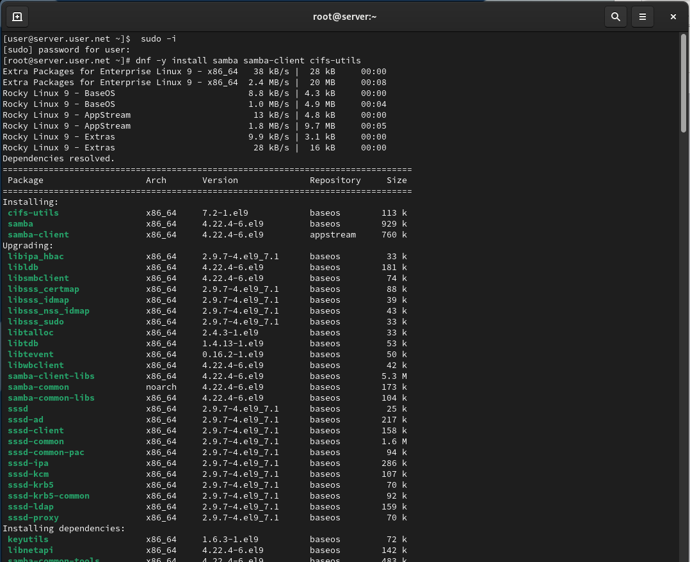
Создадим группу sambagroup для пользователей, добавлем пользователя и создадим общий каталог (рис. @fig-2):
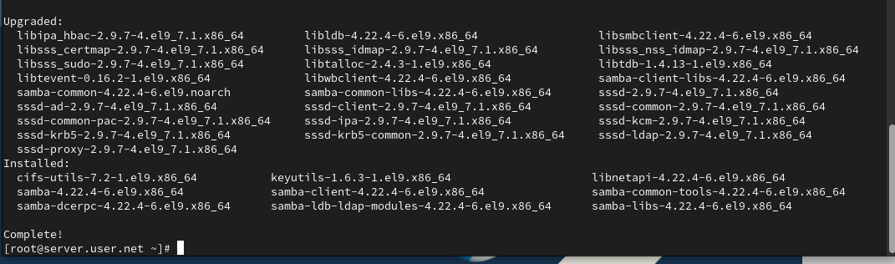
В файле конфигурации /etc/samba/smb.conf изменим параметр рабочей группы (рис. @fig-3):
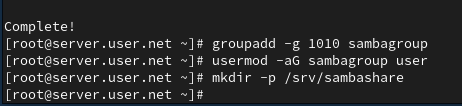
В конце файла добавим раздел с описанием общего доступа к разделяемому ресурсу (рис. @fig-4):
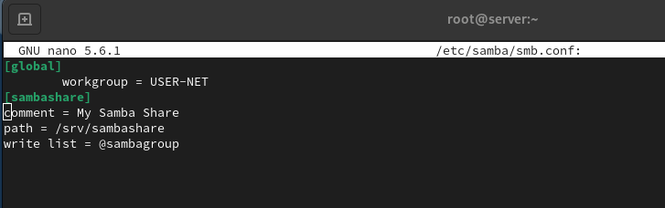
Убедимся, что мы не сделали синтаксических ошибок в файле smb.conf, используя команду testparm (рис. @fig-5):
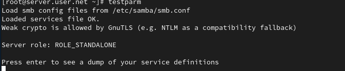
Запустим демон Samba и посмотрим его статус (рис. @fig-6):
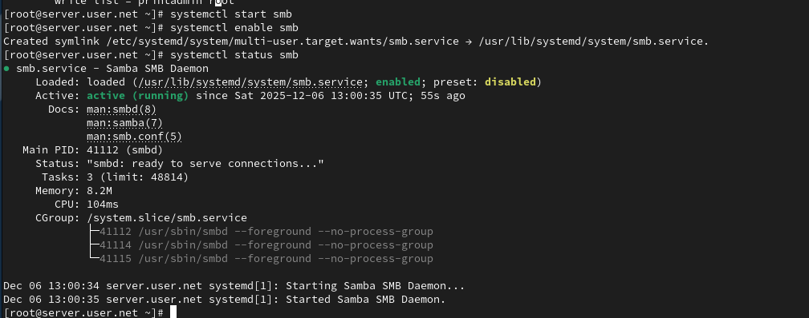
Для проверки наличия общего доступа попробуем подключиться к серверу с помощью smbclient (рис. @fig-7):
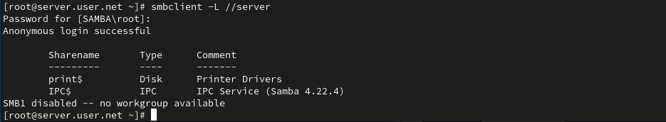
Посмотрим файл конфигурации межсетевого экрана для Samba и настроим его (рис. @fig-8):
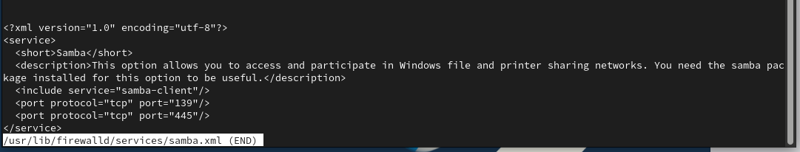
Настроим права доступа для каталога с разделяемым ресурсом, контекст безопасности SELinux и добавим пользователя в базу Samba (рис. @fig-9):
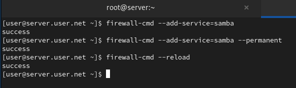
На клиенте установим необходимые пакеты samba-client и cifs-utils (рис. @fig-10):
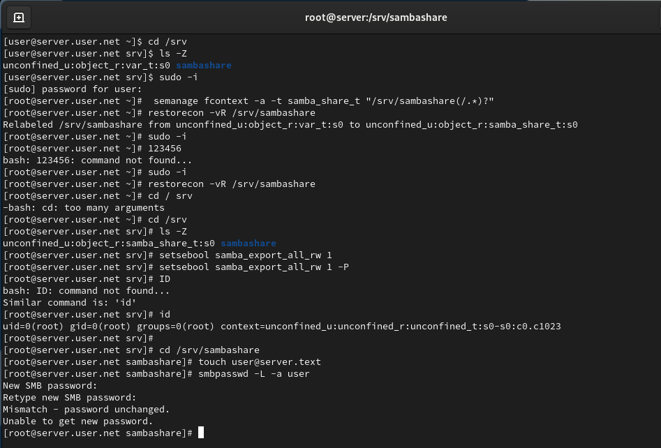
На клиенте настроим межсетевой экран, создадим группу и изменим рабочую группу (рис. @fig-11):
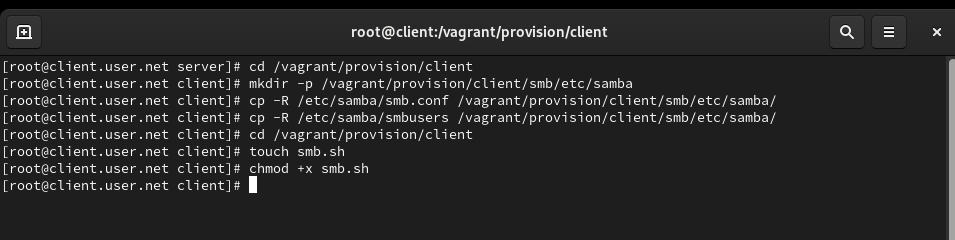
Создадим файл smbusers в каталоге /etc/samba/ для настройки работы с Samba с помощью файла учётных данных (рис. @fig-12):
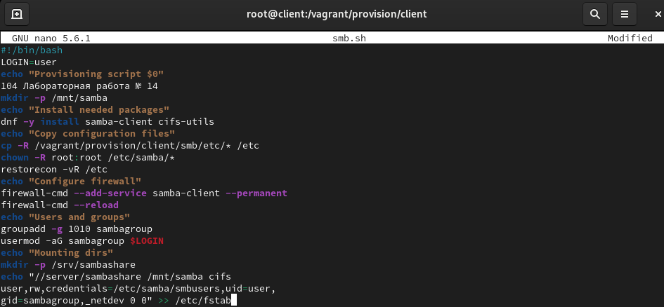
Добавим строку в /etc/fstab и подмонтируем общий ресурс (рис. @fig-13):
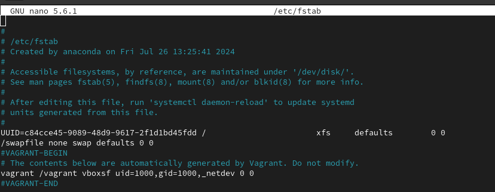
В ходе выполнения лабораторной работы были приобретены навыки настройки доступа групп пользователей к общим ресурсам по протоколу SMB.